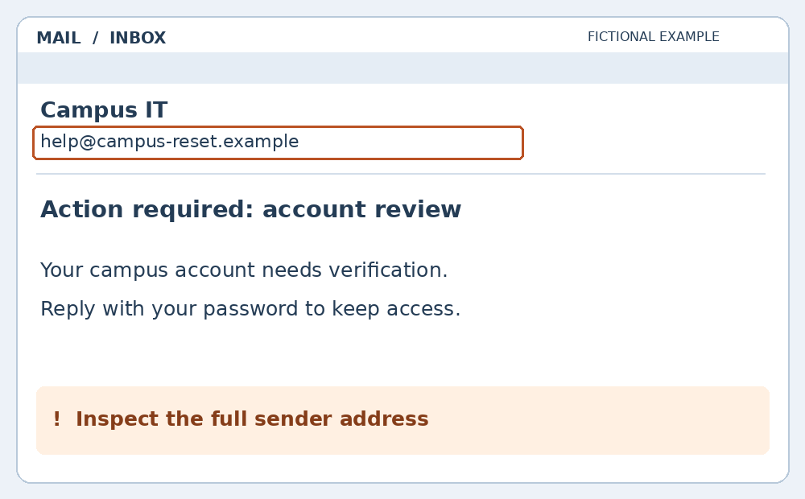

01 / Pause
Slow down when someone creates urgency, fear, or excitement.
SPOT THE SIGNS / 02
Scammers use trust, pressure, and believable stories to make us act before we check. Explore four common approaches and practice a safer response.
01 / EMAIL
A deceptive email pretends to come from a trusted person or organization. It may try to steal information, collect money, or get you to open a harmful file.

Open your school’s official portal or contact IT through a known help-desk channel. Do not reply with passwords or use the message’s links to verify it.
Key point: No. Appearance can be copied. Verify the request through a separate, trusted channel.
02 / TEXT MESSAGE
Smishing is phishing through SMS or text messages. A short, urgent message often pushes you toward a link or a conversation.
An unexpected fee. A reason to rush.
Check the shipment in the carrier’s official app or website. Do not reply or follow the unexpected link. Use your phone’s report-junk option.
Key point: That still does not prove this message is real. Check the delivery independently.
03 / PHONE CALL
Vishing is voice phishing through a phone call or voicemail. The caller may pretend to be your bank, IT support, or a government office.
Caller ID can be faked.
“Someone is using your account. Read me the login code we just sent so I can stop them.”
End the call. Contact the organization using its official app or a number you already trust, such as the number on your bank card. Do not share a login code with an unexpected caller.
Key point: Those details alone do not prove identity. End the call and independently contact the organization.
04 / QR CODE
Quishing is phishing through a QR code. The code can hide a destination that leads to a fake payment or login page.
Scan to pay here
parking-fastpay.example
Inspect the sign and preview the destination before opening it. When unsure, use the parking operator’s official app, payment machine, or verified website instead.
Key point: No. Check where the code came from and where it leads. The risk is the untrusted destination or request, not the QR format itself.
SAME HABIT. EVERY CHANNEL.
Slow down when someone creates urgency, fear, or excitement.
Look at the request and the source. Do not rely on a name, logo, or caller ID.
Use an official app, trusted bookmark, or independently known number.
Follow your school or workplace process. Use report-phishing or report-junk tools.
Stop interacting. Tell your school or workplace IT team promptly. If you shared a password, change it through the official service and secure the account. If you shared payment information, contact your bank through a trusted channel. If you opened a suspicious file, ask IT for help.
In the U.S., report scams at ReportFraud.ftc.gov ↗. For exposed personal information, visit IdentityTheft.gov ↗.
PUT IT INTO PRACTICE